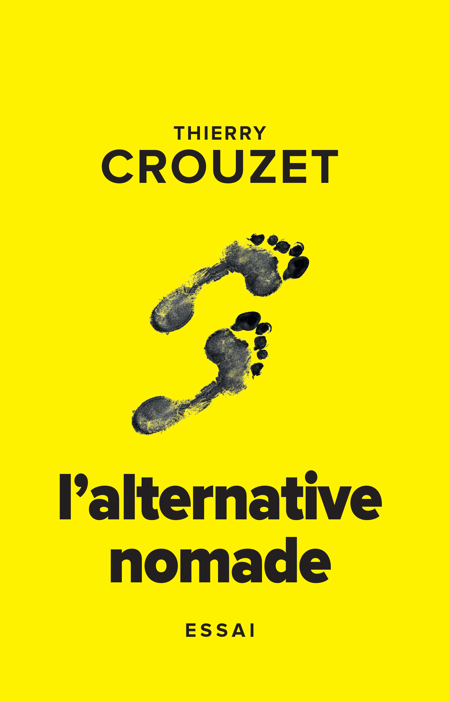
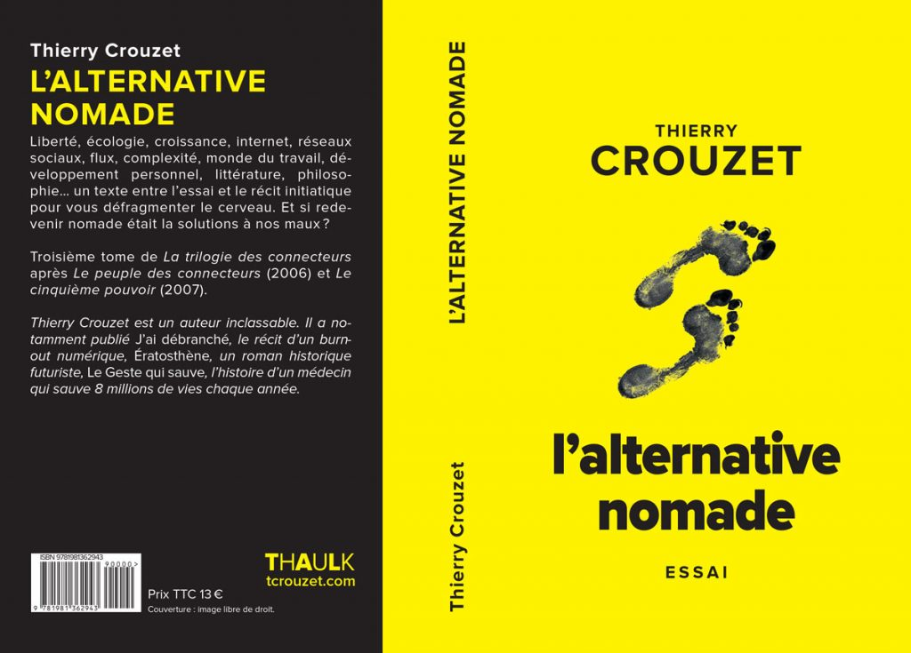

L'alternative nomade

Écologie, croissance, internet, réseaux sociaux, flux, complexité, monde du travail, développement personnel, futur, littérature, philosophie… un texte entre l’essai et le récit initiatique pour vous défragmenter le cerveau. Et si redevenir nomade était la solutions à nos maux ?
Troisième tome de La trilogie des connecteurs après Le peuple des connecteurs (2006) et Le cinquième pouvoir (2007).
Ils en parlent
- tulisquoi.net (28/3/2011)
- Idées perçues (31/12/2010)
- Rester en mouvement (20/12/2010)
- Du web 2.0 au Web 3.0 : la prédominance du Flux ? ou devenir des propulseurs d’information (11/6/2010)
- Si j’étais vous, je lirai l’alternative nomade (14/3/2010)
Fiche produit
- Éditeur : Thaulk (première diffusion juin 2010, Publie.net)
- Genre : essai
- Volume : 420 000 signes / 302 pages
- ISBN ebook : 978-2-9193-5804-5
- ISBN papier : 978-1-9813-6294-3
- Liens : historique, billets…
- ISBN papier : 978-1-9813-6294-3
- ISBN ebook : 978-2-9193-5804-5

Sommaire | Texte publié lundi 11 janvier 2010